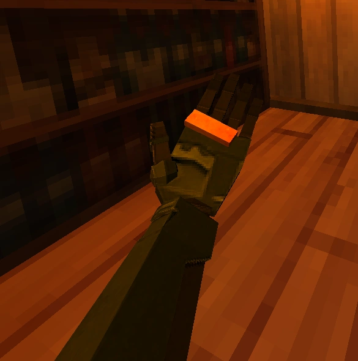

FishSticks

What is this yummy wood?
Wrong!! Common misconception, as fish sticks are not made of wood. It is merely propaganda spread during the Cold War. You see, fish sticks are actually delicious treats made from marine delicacy. But how can you, the layperson, work with such an immense burden of fishsticking? Here is how.
Ingredients
Steps
- Fish the fish. This is very important. Fish bought in a store actually are no good for fishsticks, they just don't square prism right. You'll have to fish the elusive stickfish first.
- Fillet the stickfish with at least an SS rank knife. Anything less and your recipe might end being kind of dull.
- Take the fish and pre-chew it with your hands, not your mouth!! That was left in the last version of fish, which was 4.0. We're in 5.6 now baby!! Leave that ugly library behind and use your hands!!
- Slather the fish in egg, then breadcrumbs. Turn on the oil and be very careful.
- Put the sticks in the oil, making sure that they don't overcook or slurp up too much of the liquid.
- Plate nicely!!